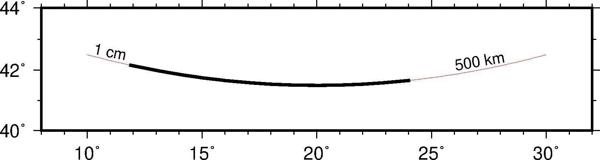
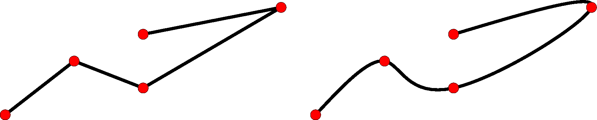
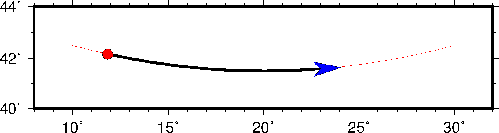

4.10 线条属性¶
对于线条而言，其基本的画笔属性由三个：线宽、颜色和线型，在 画笔 中已经做过介绍。除此之外，某些模块还可以为线条设置额外的属性，这些额外的属性可以通过在画笔属性后加上子选项来是实现。
线条的额外属性包括：端点偏移量、线条平滑和端点箭头。
4.10.1 端点偏移量¶
在给定若干个数据点绘制线条时，一般都是从起点（第一个点）一直画到终点（最后一个点）。可以使用 +o 子选项为线段两端指定偏移量，使得绘制线段时的起点和终点与输入数据中指定的起点和终点间存在一定的偏移量。该子选项的语法是:
+o<offset>[<u>]
- 若只给了一个
<offset>，则表示起点和终点共用同一个偏移量 - 也可以用
<offset>/<offset>分别为起点和终点指定不同的偏移量 - 对于每个偏移量，都可以使用长度单位
c|i|p或距离单位
下面的示例展示了 +o 子选项的用法。图中，细线和粗线使用了相同的输入数据，其中细线没有使用 +o，此时线段的起点和终点与数据指定的点重合；粗线在绘制线条时使用了 -W2p+o1c/500k 选项，即在起点处偏移1厘米，在终点处偏移500千米。

线段起点偏移示意图
4.10.2 线条平滑¶
通常情况下，在绘制线条时，两点之间是用直线连接的（地图上两点之间默认用大圆弧连接）。使用 +s 子选项会使用 Bezier splines 在两点之间做样条插值以得到更光滑的曲线。
下图中，左图使用了 -W2p 选项，右边使用了 -W2p+s。

线条自动样条插值示意图
4.10.3 端点箭头¶
默认情况下，在绘制线段时，线段的两个端点并没有什么特别的。使用 +v 子选项，可以在线段的一端或两段绘制端点箭头。该子选项的语法为:
+v[b|e]<vspecs>
- 默认会在线段两端都加上箭头，
b|e表示只绘制开头或结尾的箭头 <vspecs>用于指定端点箭头的属性，详见 绘制矢量/箭头
下图中细线是通常绘制的线段，粗线使用的选项是 -W2p+o1c/500k+vb0.2i+gred+pfaint+bc+ve0.3i+gblue。

线条端点箭头示意图
4.10.4 其它属性¶
除了上面提到的属性之外，GMT中还有一些参数可以影响线段的外观。这些参数包括：
- PS_LINE_CAP：控制线段顶端的绘制方式
- PS_LINE_JOIN：控制线段拐点/交点的绘制方式
- PS_MITER_LIMIT：控制线段拐点在
miter模式下的阈值